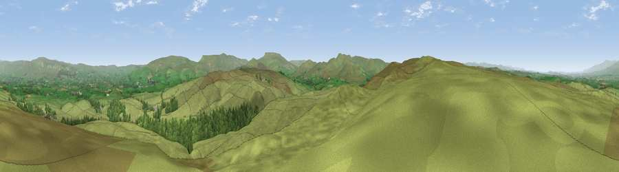

Viewpoint near Crosby Garrett
#5894 in England · top 17% of its area beats it · near Crosby GarrettWhere it is
The exact computed spot (NY 72112 08025). Click the marker for map links.
The view, rendered

A 360° render of this exact spot computed from the terrain model, tree cover and land cover — summer colours, afternoon light, calibrated against photographs of famous viewpoints. Real trees, hedges and buildings will differ in detail.
The panorama
Grey silhouette: terrain skyline in each direction (720 bearings, Earth curvature and refraction included). Dashed green: skyline with trees (+15 m) and buildings (+8 m) as obstacles. Blue strip: how far the ground is visible on each bearing.
Where the view opens
Wedge length = distance to the farthest visible ground on that bearing (vegetation-aware). Rings at 10, 25 and 50 km.
What fills the view
90% grassland · 9% woodland
Angular shares of the visible panorama (visual magnitude), not map area. Landscape diversity 0.15 (0–1 Shannon).
Key numbers
More beautiful places nearby
The staircase of upgrades: each row has a higher view potential than everything closer. Driving times are estimates from straight-line distance, calibrated against real road routing — check an actual route before setting out.
| Place | Direction | Drive | Score |
|---|---|---|---|
| Viewpoint near Ravenstonedale | SSW · 7 km | ~14 min | 70.8 |
| Green Bell | SSW · 7 km | ~15 min | 75.2 |
| Randygill Top | SSW · 9 km | ~17 min | 76.0 |
| Viewpoint c9983_7527 | SSE · 10 km | ~19 min | 76.3 |
| Viewpoint c10024_7603 | SE · 11 km | ~20 min | 76.9 |
| Fell Head | SW · 12 km | ~23 min | 78.8 |
| Calders | SSW · 13 km | ~24 min | 79.0 |
| Calf Top | SSW · 23 km | ~38 min | 79.8 |
54.46682, -2.43177 · source: screening · position refined by local search. Computed location — check access rights before visiting.